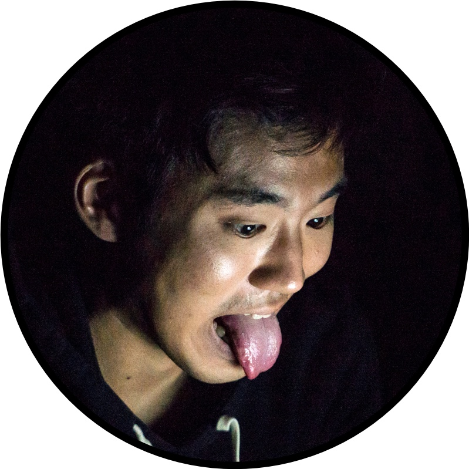
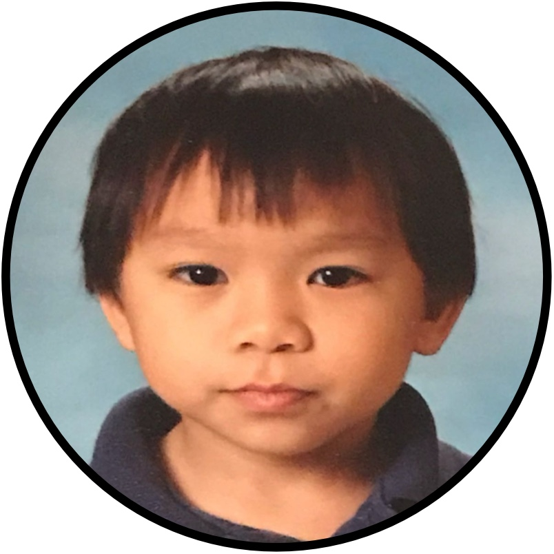
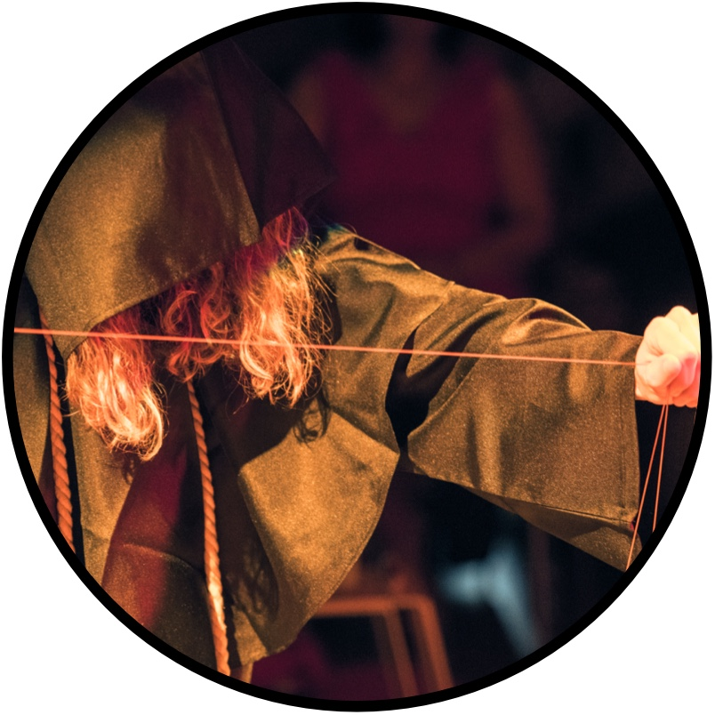
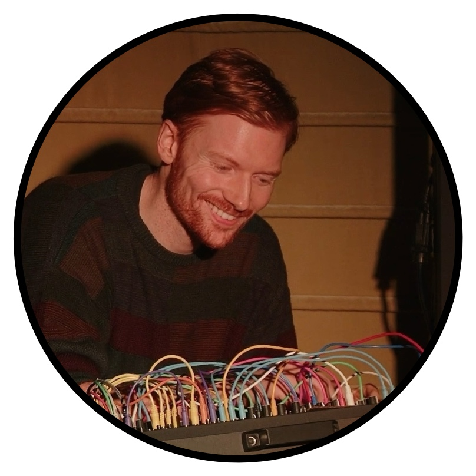
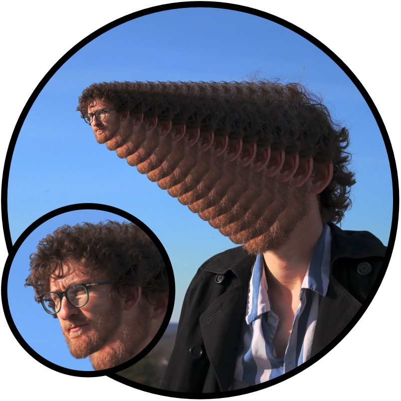

Located within Stanford University's Center for Computer Research in Music and Acoustics (CCRMA), GGRMA (pronounced "gar-ma") is a special interest research group and emerging community, dedicated to creating artful audio-driven video games as a form of creative expression and critical practice. This community exists at the intersection of computer music research and a growing subculture of independent game developers, and arises from our shared history of gaming and our academic practice of building tools for interactive audio and graphics. GGRMA both uses and drives the development of these tools, including ChucK, ChuGL, and other open-source software. We are computer musicians, we are toolbuilders, we are video game makers. GGRMA radically advocates for a new research model of game development that prioritizes artful tool-building as a core practice, a creative ethos of “write more, care less” that values creative momentum over perfectionism, and an abiding desire to share our work across communities within and beyond academia.
Our research questions include:
• What happens when computer music researchers try to make games with their
domain-specific tools and sensibilities?
• How might a radical prioritization of music and real-time synthesized audio expand
the practice of game design, or even the conception of what constitutes a “game?”
• How can our rich traditions both reshape and respect the values of video game
culture?
• How can we design tools that support video game developmnent both a mode of creative
expression and academic research?
Tools
• ChucK:
strongly-timed music programming language
• ChuGL: 2D/3D
graphics engine and programming paradigm built into the ChucK language, combining ChucK's
strongly-timed, concurrent programming model and real-time audio synthesis with
high-performance 3D/2D graphics.
• WebChuGL: ChucK/ChuGL
in web browsers
• GGRMA SDK (in progress): a software development toolkit in ChucK/ChuGL to
facilitate creating artful, music-driven video games
Ge Wang is an Associate Professor at Stanford's CCRMA. He is the designer of the ChucK audio programming language, the director of the Stanford Laptop Orchestra and the Stanford VR Design Lab. He is the Co-founder of Smule and the designer of the Ocarina and Magic Piano apps for mobile phones. He is a Senior Fellow and a Faculty Associate Director of Stanford Institute for Human-Centered AI and Data Science. He teaches at the intersection of engineering, art, and the humanities (and believes these are subjects that should never have been separated from one another). A 2016 Guggenheim Fellow, Ge is the author of Artful Design: Technology in Search of the Sublime, a (comic) book about the craft, aesthetics, and ethics of shaping technology. Ge leads the Music.Computing.Design research group at CCRMA.
Andrew Zhu Aday (azaday) is a CCRMA Ph.D. candidate focusing on programming language development, audio-centric games, and audiovisual design. He is the creator of ChuGL, the strongly-timed graphics engine in the ChucK programming language, used to create GGRMA’s games. In his spare time, he enjoys touching grass.

Dr. Kunwoo Kim is a postdoctoral scholar at Human-centered AI (HAI) at Stanford University. His PhD dissertation was on Humanistic Tool-building in Virtual Reality, exploring artful design philosophy and methodology in audiovisual interactive medium. He is the founder of the Stanford Virtual Reality Orchestra (SVOrk) and the creator of Virtual Field Trip to a Computer Music Research Center (VVRMA). He now explores meaningful and quiet uses of generative AI in role-playing games.

Ben Hoang is a Master’s student at CCRMA blending software and creative experimentation—designing interactive installations, composing audiovisual performances, and developing new ways to interact with technology. His current interests include audio-centric video games, artful creativity, and interactive and interpersonal experiences. His current micro-interests include DMX bulbs, lamps, and CRTs.
Audrey Lee is an amateur video game artist with a love for games and tiny squares. Professionally, she works as a data visualization and information designer.
Gray Wong used to be a student in Stanford's MSCS program studying Human-Computer Interaction, but graduated and is working in the real world now. He is interested in cultivating and extending a sense of belonging through technology and design, and thinks games are a perfect avenue for that. In their spare time, they enjoy.

Father Shaheed is a composer, performer, toolbuilder, but does not make video games. He exists as an ephemeral presence in and around GGRMA, and occasionally blessing GGRMA with tools for holy game development.

Gregg Oliva is a musician and engineer pursuing a master’s degree at Stanford University’s Center for Computer Research in Music and Acoustics (CCRMA). His interests span modular synthesis, interactive systems and games, software-driven composition, and spatial audio. He enjoys creating expressive musical tools, extracting unlistenable sounds from his Eurorack, and playing too many video games.

Michael Gancz is a Ph.D. student at CCRMA, researching the intersections of music and interactive media with medicine. They are also a composer and an indie game developer!
The ChucK Team, the VR Design Lab, and the CCRMA community!